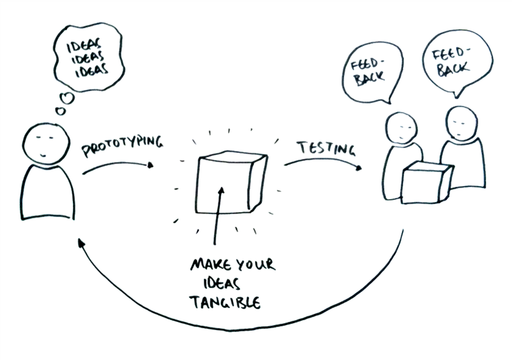
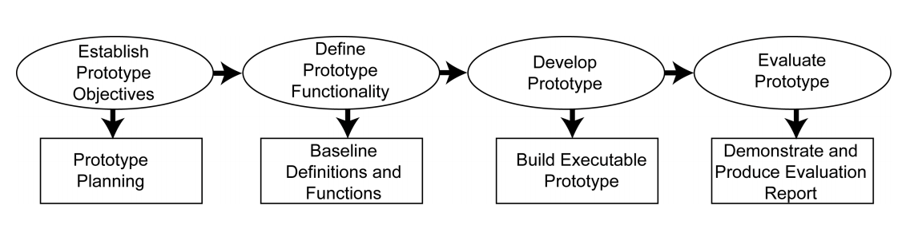
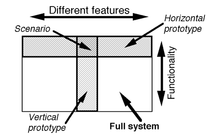
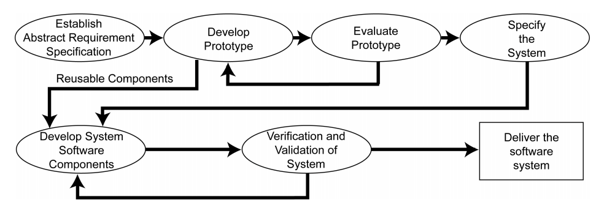
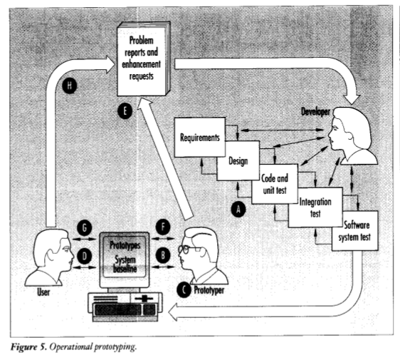

#<center>** Prototyping**</center>  --- ##<center>**Table of Contents**</center> ___ - [What is prototyping ](#4) - [Need for prototyping ](#5) - [Hardware Prototyping vs Software Prototyping ](#7) - [The process of prototype development](#8) - [Prototypes as design artifacts](#11) + [Representation](#13) + [Off-line vs On-line prototypes](#14) + [Precision](#15) + [Interactivity](#16) + [Evolution](#17) - [Prototype Orientation](#18) - [Prototyping Strategies](#20) - [Throwaway Prototyping](#21) - [Advantages of Throwaway Prototyping](#24) - [Disadvantages of Throwaway Prototyping](#25) --- ##<center>**Table of Contents (contd.)**</center> ___ - [Off-line Rapid prototyping techniques](#26) - [On-line Prototyping Techniques](#28) + [Executable Specification Techniques](#29) + [Very high level languages](#30) + [ Reusable Components](#32) + [Fourth-generation languages](#33) - [Evolutionary Prototyping](#35) - [Approach of Evolutionary Prototyping ](#37) - [Advantages of Evolutionary Prototyping ](#38) - [Disadvantages of Evolutionary Prototyping ](#39) - [Operational Prototyping ](#40) - [How Operational Prototyping Works](#42) - [Operational Prototyping Techniques](#45) - [References](#53) --- ##<center>**What is prototyping**</center> ___ ### <p style='text-align: justify;'> A prototype is an incomplete version of a software system being developed, that is used to demonstrate concepts, try out design options and, generally, to find out more about the problem and its possible solutions.</p> + <p style='text-align: justify;'> It is built so that the users can experience some of the proposed features and functionality of the software.</p> + <p style='text-align: justify;'> Typically, it simulates only a few aspects of the features of the final system, but may be completely different from the final implementation. </p> --- ##<center>**Need for prototyping**</center> ___ + ### A better quality system can be delivered <p style='text-align: justify;'> Many a times the developers may not fully understand the requirements and the expectations of the end users. Prototyping enables that the misunderstandings which occur can be identified and sorted out early on in the process. </p> + ### Problems can be identified early on <p style='text-align: justify;'> Using a prototype, makes a working system available early on in the process. The user can then identify possible improvements which can be made before the system is completed. </p> --- ##<center>**Need for prototyping**</center> ___ + ### Better involvement of end users <p style='text-align: justify;'> The end user feels more involved in the development of the system and will 'buy' into it. </p> + ### Leads to fulfillment of user requirements <p style='text-align: justify;'> A system which has been through prototyping will generally have an improved design quality and will be far closer to what the user needs. </p> + ### Cost savings <p style='text-align: justify;'> Identifying and rectifying the problems with the system in the early stages of development is less expensive than towards the end of the development phase. </p> + ### Training <p style='text-align: justify;'> The prototype developed can be used to help train the staff while the real system is still being under development. </p> --- ##<center>**Hardware Prototyping vs Software Prototyping**</center> ___ ### <p style='text-align: justify;'>Software prototyping and hardware prototyping have different objectives. </p> + <p style='text-align: justify;'> While developing hardware systems, a prototype is generally used to validate the system design. e.g. A prototype for an electronic system may be developed using previously used components before investment is made in expensive and special integrated circuits to build the final version of the system.</p> <br> + <p style='text-align: justify;'>A software prototype is not normally intended for design validation but to help develop and check the reality of the requirements for the system. The prototype design is usually different from that of the final software system.</p> --- ##<center>**The process of prototype development**</center> ___  --- ##<center>**The process of prototype development**</center> ___ <p style='text-align: justify;'>A process model for prototype development is shown in the previous figure.</p> + <p style='text-align: justify;'> The objectives of prototyping should be made explicit and definite from the start of the process. These objectives can be to develop a system for prototyping the user interface, or to validate functional requirements of the system or a prototype to demonstrate the feasibility of the the proposed system to the management. <br> The same prototype cannot satisfy all the objectives. Leaving the objectives unstated, may lead to misunderstanding of the function of the prototype to the management or end-users. </p> + <p style='text-align: justify;'>The next stage in the process is to decide what to include and more importantly, what to leave out of the prototype system. We need to exclude some functionality out of the prototype to reduce prototyping costs and speed up the delivery schedule. We can also exclude the non-functional requirements such as response time, memory utilization, security, reliability. </p> --- ##<center>**The process of prototype development**</center> ___ + <p style='text-align: justify;'> After building the prototype, the final stage of the process is that of prototype evaluation.<br><br> Provision must be made during this stage for user training, and the prototype objectives should be used to derive a plan for evaluation. Users need time to adapt with a new system and to settle into a normal pattern of usage. Once they start using the system normally, they then are able to discover problems in requirements and other missing features. </p> --- ##<center>**Prototypes as design artifacts**</center> ___ <p style='text-align: justify;'>When successful prototypes are viewed as artifacts of design process, we can find several similar characteristics in them.</p> + <p style='text-align: justify;'>They support creativity and help the developer in capturing and generating ideas, and in gathering relevant information about the users and their background.</p> + <p style='text-align: justify;'>They enable communication between the various stake holders, helping designers, engineers, managers, software developers, customers and users to interact with each other.</p> + <p style='text-align: justify;'>They also permit early evaluation through usability studies and informal user feedback, throughout the design process.</p> --- ##<center>**Prototypes as design artifacts**</center> ___ <p style='text-align: justify;'>Prototypes and prototyping techniques can be analyzed along four dimensions: </p> + <p style='text-align: justify;'>Representation describes the tangible forms of the prototype, e.g., paper sketches or computer simulations.</p> + <p style='text-align: justify;'> Precision describes the level of detail at which the prototype is evaluated e.g. A rough prototype or a highly polished one.</p> + <p style='text-align: justify;'> Interactivity describes the extent to which the user can interact with the prototype e.g., view-only prototype or a fully interactive one.</p> + <p style='text-align: justify;'> Evolution describes the expected life-cycle of the prototype. e.g. throwaway or iterative.</p> --- ##<center>**Representation**</center> ___ <p style='text-align: justify;'>A prototype can be series of paper sketches or it can be a computer simulation showing the details. Based on these different forms, we can classify prototypes as: </p> + Off-line prototypes + These generally include paper sketches, whiteboard illustrations, cardboard mockups and videos. + They can be created quickly, usually during the early stages of design, and are usually thrown away after they have served their purpose.</p> + On-line prototypes + These are computer based prototypes which include computer animations, interactive video presentations, programs written with scripting languages, and applications developed with interface builders. + The cost of producing such prototypes is usually higher, and skill requirement to build such prototypes is also high.They are effective in the later stages of the design process, when the basic design strategy has been decided. --- ##<center>** Off-line vs On-line prototypes **</center> ___ + <p style='text-align: justify;'> Off-line prototypes are very inexpensive and quick to build. This allows a rapid iteration cycle and helps in examining a variety of design alternatives.</p> + <p style='text-align: justify;'> Off-line prototypes are less likely to constrain the thinking of the designer. The programming languages or development environments used in on-line prototyping impose constraints on the interface, thereby limiting creativity and restricting the number of ideas.</p> + <p style='text-align: justify;'>Off-line prototypes have the advantage of being created by a wide range of people. It is limited not just to programmers, but all types of designers, users, managers and others can all contribute equally.</p> + <p style='text-align: justify;'> However, off-line prototypes are are insufficient to fully evaluate a particular design idea. e.g. An interface which is required to give rapid feedback to the users or to produce dynamic visualizations will usually require on-line prototypes. </p> --- ##<center>**Precision**</center> ___ <p style='text-align: justify;'>Precision is the level of details with respect to the purpose of the prototype. e.g. While designing a dialog box, it is necessary to specify the size and positions of the various elements of the box. But it's not required to decide the actual content text in detail.</p> + <p style='text-align: justify;'>The aspects of the prototype that are not precisely stated are the ones which are open for further discussion or for exploration. </p> + <p style='text-align: justify;'>The precision level increases with the development of successive prototypes and as more details are set. </p> + <p style='text-align: justify;'>The representation forms of the prototypes reflect their level of precision: hand drawn sketches aren't that precise unlike computer simulations which are usually very precise.</p> --- ##<center>**Interactivity**</center> ___ <p style='text-align: justify;'> Illustrating how the user will interact with the system is an important aspect of designing an interactive prototype. Prototypes can support different types of interaction - </p> + <p style='text-align: justify;'> Fixed prototypes are the non-interactive ones where the user cannot interact with them. e.g.video clips or pre-computed animations. Fixed prototypes simply portray what the interaction might look like. </p> + <p style='text-align: justify;'> Open prototypes support large number of interactions. Such prototypes work like the real system, with some limitations. They usually only cover a certain part of the system and have limited performance and error-handling capabilities as compared to the final system. </p> --- ##<center>**Evolution**</center> ___ <p style='text-align: justify;'> Prototypes can be classified into the following based on their different life spans: </p> + <p style='text-align: justify;'> Rapid prototypes are built for a specific purpose and are then discarded away. They must be be inexpensive and easy to produce.</p> + <p style='text-align: justify;'>Iterative prototypes are meant to evolve, either for working out specific details or for exploring different alternatives. </p> + <p style='text-align: justify;'> Evolutionary prototypes are the ones which are designed to become part of the final system. As they are meant to be a part of the final system , they require greater planning and practice than the above approaches.</p> --- ##<center>**Prototype Orientation**</center> ___ <p style='text-align: justify;'> The designer should decide what is the role of the prototype with respect to the final product and in which order to build the different aspects of the prototype. <br> The orientation of its design is also a major factor in helping out the software development teams. Based on their orientation, prototypes can be classified as: </p> + **Horizontal prototypes** + <p style='text-align: justify;'> They typically involve focusing on the interoperability over the functionality, more towards the user-interface.</p> + <p style='text-align: justify;'>They help in getting an overall picture of the system from the user’s perspective and address issues such as consistency (functions similar in nature can be accessed through similar user commands), coverage (all the required functions can be supported) and redundancy (no same function can be accessed through different commands).</p> + <p style='text-align: justify;'>This type of prototyping is most commonly used by large software teams and tend to be progressively transformed into the final system. </p> --- ##<center>**Prototype Orientation (contd.)**</center> ___ + **Vertical prototypes** + <p style='text-align: justify;'> As compared to horizontal prototypes, vertical prototypes are highly functional, but generally only involves on a particular subset of features/functionality of the system. </p> + <p style='text-align: justify;'>They are usually created to assess the feasibility of a feature and are generally higher in precision.</p> + <p style='text-align: justify;'>They are often thrown away because they are generally created early in the project, and due to the fact that they focus on only a single design question. </p> <center></center> --- ##<center>**Prototyping Strategies**</center> ___ <p style='text-align: justify;'> Software prototyping can be accomplished through different approaches. However, all of them are in some way based on the following two major types of prototyping: </p> ###**Throwaway Prototyping** ###**Evolutionary Prototyping** --- ##<center>**Throwaway Prototyping **</center> ___ <br><br> <center></center> --- ##<center>**Throwaway Prototyping**</center> ___ + <p style='text-align: justify;'> Throwaway Prototyping (also called rapid prototyping) is the process of creating a model that will be discarded eventually rather than reusing the same one for the final delivered software.</p> + <p style='text-align: justify;'>After the preliminary requirements are understood, the developers build a simple working model of the system to show the customer/end-users what the end-product might look like when they are implemented into a final product.</p> + <p style='text-align: justify;'>The primary objective of this approach is to understand the system requirements clearly and provide additional information for managers to assess the risks involved. It usually starts with requirements that are poorly understood. Once the requirements are clarified, the system will be developed again from the beginning.This model is conducive when the requirements are vague but stable. </p> --- ##<center>**Throwaway Prototyping (contd.) **</center> ___ + <p style='text-align: justify;'> The stakeholders and end-users should not give in to the temptation to turn the throwaway prototype into a delivered system. The reasons for this are: </p> + <p style='text-align: justify;'> Non functional aspects of the systems such as performance, security, robustness and reliability are generally ignored during prototype phase to enable rapid implementation. It may be not be possible to tune the prototype to meet these nonfunctional requirements.</p> + <p style='text-align: justify;'> During the prototype development phase, the prototype would have been tweaked to reflect the user needs. As these changes are likely to have been made in an uncontrolled way, they can probably degrade the system structure. Such a system is difficult and expensive to maintain.</p> --- ##<center>**Advantages of Throwaway Prototyping **</center> ___ + <p style='text-align: justify;'> Throwaway Prototyping can be done easily and quickly.</p> + <p style='text-align: justify;'> This model helps to ensure that that all the requirements are satisfied when the final product is built.</p> + <p style='text-align: justify;'> Getting quick feedback helps to refine the requirements early on in the development process. Thereby, making changes early in the development lifecycle is extremely cost effective. </p> + <p style='text-align: justify;'> This approach helps in to define goals early on, identify potential problems and conduct risk assessment of the project as a whole.</p> --- ##<center>**Disadvantages of Throwaway Prototyping **</center> ___ + <p style='text-align: justify;'> Some important features may have been left out of the prototype to simplify rapid implementation. </p> + <p style='text-align: justify;'> Non functional aspects like security and reliability of the system may not be included in the prototype due to the short span of time. </p> + <p style='text-align: justify;'> It takes time and resources to actually undertake this prototyping.</p> --- ##<center>**Off-line Rapid prototyping techniques **</center> ___ <p style='text-align: justify;'> Off-line prototyping techniques range from simple to very elaborate. They are usually considered as means for thinking through the design issues, which are to be thrown away when no longer needed. </p> + **Paper and pencil** + <p style='text-align: justify;'> The easiest and fastest form of prototyping involves sketching out on paper, transparencies and post-it notes to represent aspects of an interactive system.</p> + <p style='text-align: justify;'> Most paper prototypes start as quick sketches on paper and then progress to more detailed computer screen images.</p> + **Mock-ups** + <p style='text-align: justify;'> Mock-ups involve creating user interfaces that show the end user what the software will look like without actually building the software. Interface mock-ups can range from simple hand drawn screen layouts, through realistic bitmaps, to semi functional user interfaces developed in a software development tool.</p> --- ##<center>**Off-line rapid prototyping techniques (contd.) **</center> ___ + **Mock-ups ( contd.)** + <p style='text-align: justify;'> Mock-ups allow the designer to concentrate on the physical design of the device, such as the position of buttons, labels, menus on the screen.</p> + **Wizard of Oz technique** + <p style='text-align: justify;'> This technique gives the users the impression that they are working with a real interactive system.</p> + <p style='text-align: justify;'> This technique is based on a scene in the 1939 movie "Wizard of Oz".</p> + <p style='text-align: justify;'> A user sits on a system and interacts with a program. The software designer, acting as the wizard behind the scenes, watches the user's action. By responding in different ways, the designer creates the illusion of a working software program. In some cases, the user is unaware that a person, is operating the system. </p> --- ##<center>** On-line Prototyping Techniques**</center> ___ <p style='text-align: justify;'> The basic idea behind the prototyping approach is to be able to develop a prototype of a system as quickly as possible. This allows feedback from all stakeholders to be given early in the software process. </p> The major on-line prototyping techniques are - - Executable specification languages - Very high-level languages - Composition of reusable components - Fourth-generation languages <p style='text-align: justify;'> The above mentioned techniques can be used in combinations. Some part of the software system may use one technique while some other part could be done more efficiently using some other technique. </p> --- ### 1. Executable Specification Techniques ___ <p style='text-align: justify;'> Using a formal specification to develop a prototype is useful as it combines unambiguous specification with a prototype. But when this is applied practically, there are many constraints - </p> - Graphical user interfaces are extremely difficult to prototype using this technique. <p style='text-align: justify;'> - Prototype development may not be very rapid to start with using this technique as it requires a detailed analysis of the system, functions, and features that were rejected earlier and features which need to be included. </p> - Executable specifications mainly test only functional requirements. --- ### 2. Very high-level languages ___ <p style='text-align: justify;'> These are generally programming languages which have powerful data management facilities and efficient memories. However, dynamic languages of this genre are not used as they require large run-time support system which in turn increases the storage that is required. </p> Smalltalk is an object oriented programming language that is excellent for prototyping due to- - Rapid modifications of a Smalltalk system are possible without unforeseen effects on the rest of the system. - All the objects defined in the environment are available to the programmer which helps in reusability. - Partial automation in the construction of user interfaces for interactive systems is supported in some versions. --- ### 2. Very high-level languages (contd.) ___ REFINE is a class of wide-spectrum programming languages used for prototyping. <p style='text-align: justify;'> A wide-spectrum language is a programming language which combines a number of paradigms. It may include objects, imperative constructs and logic programming which are also provided separately by languages such as Pascal, Lisp and Prolog. </p> <p style='text-align: justify;'> The mixed language support involves programming different parts of the system in different languages. A communication framework needs to be established between the different parts in this case. </p> <p style='text-align: justify;'> The advantage of this approach is that for each part, the most appropriate language can be chosen which can speed up prototype development. </p> <p style='text-align: justify;'> The disadvantage is that it may be difficult to establish an interface which allows the communication of multiple languages. </p> --- ### 3. Reusable Components ___ <p style='text-align: justify;'> Reusable components are useful as they reduce the time taken to develop a prototype. Having a library of reusable components and some mechanism to use them into the existing system leads to faster development. Another advantage is that they help in reducing the overall costs. </p> <p style='text-align: justify;'> The system specification has to take into account which of the reusable components are available. Sometimes this approach is combined with other approaches such as using fourth-generation languages. </p> <center><center>  --- ### 4. Fourth-generation languages ___ <p style='text-align: justify;'> At their simplest, these languages could be database languages such as SQL. Since they are commonly used to develop business systems, they may also include a package for a report generator and a powerful interactive facility for application generation. </p> <p style='text-align: justify;'> They rely on software reuse where common abstractions have been identified and parameterized.The programmer only needs to describe how routines for database access and report production need to be tailored and controlled. </p > <center><center>  --- ### 4. Fourth-generation languages (contd.) ___ <p style='text-align: justify;'> Systems using such languages are simpler to maintain as the developed application prototypes are smaller in this case compared to its counterparts such as COBOL. For these smaller systems it is also more cost-effective. </p> <u>**Disadvantages:**</u> - These languages are slower compared to conventional programming languages and require much more memory. <p style='text-align: justify;'> - There is no standardization across fourth-generation languages. This could lead to higher costs due to having to rewrite a program. In the long run, even though they could lead to lower development costs, the overall cost could be higher. </p> <u>**Advantages:**</u> <p style='text-align: justify;'> - They are generally used along with CASE tools for development of small-medium sized systems. Using such systems has the advantage that documentation is produced at the same time as the prototype system. </p> - The developed system should be more structured and easier to maintain. --- ##<center>**Evolutionary Prototyping**</center> ___ <center><center><br><br><br><br><br>  --- ##<center>**Evolutionary Prototyping**</center> ___ <p style='text-align: justify;'> The main goal of the evolutionary prototyping approach is to develop a mature, efficient, reliable, cost-effective software system or a solution through a series of prototyping iterations. <p style='text-align: justify;'> The prototype undergoes continuous iterations and gets refined at each iteration. At each iteration, the implementation is handed over to the customer for their feedback. Ultimately, what started out as the prototype should become the solution. </p> <p style='text-align: justify;'> At each iteration, the system can be considered as first draft, second draft and so on till the final version is ready. Evolutionary prototyping is useful in developing systems where it is extremely difficult to establish a detailed system specification document. </p> --- ##<center>**Approach of Evolutionary Prototyping**</center> ___ <p style='text-align: justify;'><p style='text-align: justify;'> An important factor that determines the success of this approach is the use of techniques and tools which allow for rapid system iterations. The changes that are suggested by the customer need to be incorporated and demonstrated again to the customer as quickly as possible. </p> <p style='text-align: justify;'> This can include the use of high level programming languages for software development, special environments, integrated software tools etc, that can accelerate the development process. </p> <p style='text-align: justify;'> One key difference between Evolutionary prototyping and specification-based approaches is the verification and validation. Verification is done by comparing the program, software system or solution to its specifications. Without having a specification, verification cannot be done. Validation process is done to ensure that the system is working as it is intended rather than its conformance to a specification. </p> --- ##<center>**Advantages of Evolutionary Prototyping**</center> ___ - The user is constantly involved with the team during the development of the software solution. <p style='text-align: justify;'> - Since prototypes are generally developed quickly to get customer feedback, this approach speeds up the delivery of the system. The changes suggested by the customer are implemented quickly and effectively. </p> - Constant customer interaction ensures that the end product meets user requirements as much as possible. - There is constant refinement of the software product. <p style='text-align: justify;'> - Compared to Throwaway Prototyping, the prototypes developed using this approach are functional prototypes, even though the developers may not have implemented all the features mentioned by the customer. </p> --- ##<center>**Disadvantages of Evolutionary Prototyping**</center> ___ <p style='text-align: justify;'> Trying to decide how adequate a system is, is difficult as it is not measurable. Human performance is not always guaranteed to be correct but we are satisfied if performance is adequate for the current task. </p> <p style='text-align: justify;'> When it comes to developing systems that are expected to last a very long time, this could be a bigger problem. The main problems associated with evolutionary prototyping are - </p> - Prototypes usually develop so quickly that is not cost-effective to produce a great deal of system documentation and schedules. - Continuous changes to a system could lead to its corruption. <p style='text-align: justify;'> - Generally for such approaches, small teams of highly skilled and passionate individuals have been used effectively. But it is still not clear as to what comprises the perfect team. </p> - It is difficult to set a budget and schedule. --- ##<center>**Operational Prototyping**</center> ___ - <p style='text-align: justify;'>Operational prototyping is a disciplined approach to developing best practices used by an organization to enhance value provided to customers through improved quality of care and reduced costs.</p> - <p style='text-align: justify;'>The main focus of operational prototyping is to take every element involved in a design process into consideration and then enhance it to the level of best practices.</p> - <p style='text-align: justify;'>It involves identifying functions, processes, and design elements that can be customized, optimized, standardized, and replicated throughout the organization, including across multiple sites.</p> - <p style='text-align: justify;'>Evolutionary prototyping and throwaway protoryping on their own aren't acceptable.</p> - They both have their unique drawbacks that make them ineffective to be used on their own. --- ##<center>**Operational Prototyping**</center> ___ - <p style='text-align: justify;'>Operational prototyping starts with analyzing all the factors that affect the delivery of services to an organization and in the process pointing out where best practices lie.</p> - <p style='text-align: justify;'>An operational prototyping team will then set out to design effective models and solutions to achieve the desired state.</p> - <p style='text-align: justify;'>In the process of modeling, everything from registration of the service to its manufacturing to its supply chain management is looked at.</p> - The next couple of slides look at a step by step working of Operational Prototyping --- ##<center>**How Operational Prototyping Works**</center> ___ - <p style='text-align: justify;'>A baseline is set by creating an evolutionary prototype and only requirements that are well understood are incorporated.</p> - <p style='text-align: justify;'>This baseline is made into copies and sent to an expert prototyper.</p> - <p style='text-align: justify;'>The job of the expert prototyper is to monitor how users react to the prototype.</p> - At each site, the prototyper will monitor the user at the system. - <p style='text-align: justify;'>If and when the user encounters a problem, the prototyper will make sure to record it.</p> - This frees the user from the responsibility of documenting the problems themselves. - <p style='text-align: justify;'>Similarly, when the user encounters a new need, the prototyper will generate a new user request on the behalf of the user and document it.</p> --- ##<center>**How Operational Prototyping Works (contd.)**</center> ___ - <p style='text-align: justify;'>Once the user has finished reviewing the prototype, the prototyper will generate a quick and dirty prototype of a new system based on the top of the baseline, with the new feature requests included.</p> - The new system is deployed to the users. - <p style='text-align: justify;'>If the users like the changes, then feature-enhancement features are written by the prototyper and the new prototype is stowed away for later reference.</p> - <p style='text-align: justify;'>If the users do not like the change, then the new features are scrapped.</p> - <p style='text-align: justify;'>Over time new changes are proposed and new feature-enhancement requests are generated. These changes are then taken into account and the developers start working on a new baseline system using conventional development practices.</p> - Code from the throwaway (quick-and-dirty) prototype is never used in the production code. ---  --- ###<center>**Operational Prototyping Techniques**</center> ___ ###Configuration Management - Managing and controlling changes in software - Consists of - <p style='text-align: justify;'>establishing standard naming convention for all parts of the software</p> - <p style='text-align: justify;'>regularly defining baselines</p> - <p style='text-align: justify;'>maintaining records to trace baseline changes over time</p> - <p style='text-align: justify;'>enforcing a set of rules to make sure that all change requests are submitted and implemented in an ordered fashion</p> --- ###<center>**Operational Prototyping Techniques (Contd.)**</center> ___ - <p style='text-align: justify;'>Configuration management for operational prototypes and evolutionary prototypes is similar since OP uses EP as its base</p> - major s/w components are identified and controlled exclusively - <p style='text-align: justify;'>baselines are created and the product is shipped as development progresses</p> - <p style='text-align: justify;'>problems are reported and change requests are sent to the review team</p> - <p style='text-align: justify;'>the configuration control board prioritizes and schedules changes for future releases</p> - <p style='text-align: justify;'>the change-control board takes decisions about how conflicts among changes should be resolved and their relative priorities</p> - <p style='text-align: justify;'>new products are then shipped after new changes are incorporated into them</p> --- ###<center>**Operational Prototyping Techniques (Contd.)**</center> ___ ###Quality Assurance - <p style='text-align: justify;'>Consists of a set of procedures to make sure that the product that is shipped meets the users standards and needs and is reliable</p> - includes quality reviews and inspection and setting of standards - <p style='text-align: justify;'>different for evolutionary and throwaway aspects of operational prototyping</p> - for throwaway prototyping segment : QA not required because prototypes are quick and dirty and not used again - <p style='text-align: justify;'>for evolutionary prototyping : same set of procedures used as those used in full scale development</p> --- ###<center>**Operational Prototyping Techniques (Contd.)**</center> ___ ###Management Challenges - ###Retaining quality prototypers - prototypers must be willing and able to work for long periods - they must have good user rapport - they must have detailed knowledge of the application domain - <p style='text-align: justify;'>they must possess extraordinary skills for developing quick-and-dirty prototypes</p> --- ###<center>**Operational Prototyping Techniques (Contd.)**</center> ___ - ###Not keeping throwaway prototypes in the field - <p style='text-align: justify;'>It must be insisted that prototypers remove prototypes of the software from the production domain because of its instability</p> - <p style='text-align: justify;'>Difficult to convince users that feel the need to retain features that they've grown fond of</p> - ###Not using patches in future versions - <p style='text-align: justify;'>patches tested during prototyping must not be kept on the user site for long durations</p> - <p style='text-align: justify;'>difficult to convince users who think that since the patch works on their systems it shouldn't be altered</p> --- ###<center>**Operational Prototyping Techniques (Contd.)**</center> ___ - ###Selecting language - <p style='text-align: justify;'>Languages that are easier to maintain make performing rapid development hard. Developers at crossroads because rapid prototyping needs both :</p> - different language from baseline : environment with multiple languages becomes difficult to maintain. - language that is not extreme on either end . A moderate language makes rapid development moderately efficient, thus not achieving the actual goal of rapid prototyping. - ### Selecting architecture - <p style='text-align: justify;'>chosen architecture must be resilient to constant change and be able to handle ever changing baselines</p> --- ###<center>**Operational Prototyping Techniques (Contd.)**</center> ___ - ###Working with widely dispersed personnel - <p style='text-align: justify;'>prototypers who go on site to check users' needs and requirements must be able to function on their own and without any managerial intervention.</p> - <p style='text-align: justify;'>this is important from the users' perspective</p> - ###Customer Satisfaction - <p style='text-align: justify;'>aim to achieve long-term customer satisfaction</p> - <p style='text-align: justify;'>customers must be instilled with a sense of trust that changing or removing features are just temporary and that all their requirements will be addressed in the final product</p> --- ###<center>**Operational Prototyping Techniques (Summary)**</center> ___ - <p style='text-align: justify;'>Operational prototyping offers best of both worlds - quick-and-dirty prototyping and conventional software development</p> - <p style='text-align: justify;'>Operational prototyping makes sure that all prototyping is done in a sensible manner</p> - <p style='text-align: justify;'>Operational prototypes work dynamically in all sorts of situations</p> - in contrast, throwaway prototyping works well only for relatively small, static problems --- ###<center>**References**</center> ___ 1. **[Wikipedia](https://en.wikipedia.org/wiki/Software_prototyping)** <br><br> 2. **Software Engineering by Ian Sommerville** <br><br> 3. **Prototyping: Small versus Large Projects IS 6840 - Vicki Sauter, University of Missouri–St. Louis** <br><br> 4. **The Human-Computer Interaction Handbook by Andrew Sears, Julie A. Jacko Chapter 52 Prototyping Tools and TechniquesMichel Beaudouin-Lafon, Wendy E. Mackay** <br><br> 5. **[Methods for Software Prototyping](http://sce.uhcl.edu/helm/REQ_ENG_WEB/My-Files/mod4/Software_Prototyping.pdf)** <br><br> 6. **[Classle.net](https://www.classle.net/book/software-prototyping)** <br><br> 7. **[Answers.com](http://www.answers.com/ Q/_are_the_advantages_and_disadvantages_of_the_evolutionary_prototyping_technique)**<br><br> 8. **Operational prototyping: a new development approach. IEEE Software, 70-78 by Alan Davis** 9. **operational prototyping a tool for delivering value**, Rebecca Flink, Healthcare Financial Management, June 2014